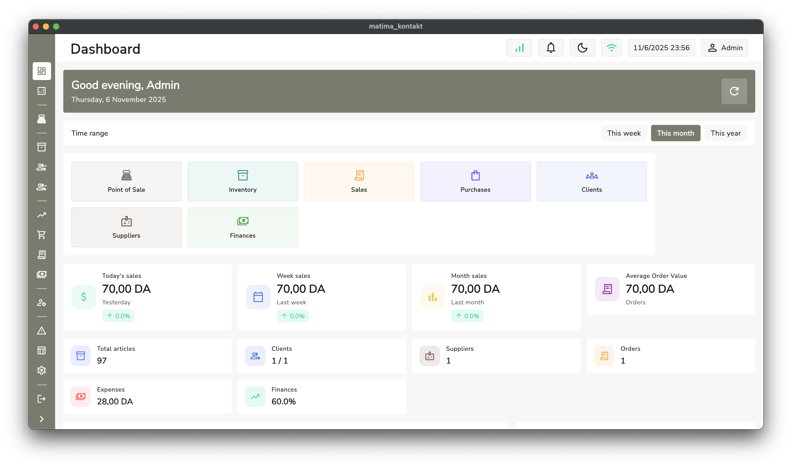
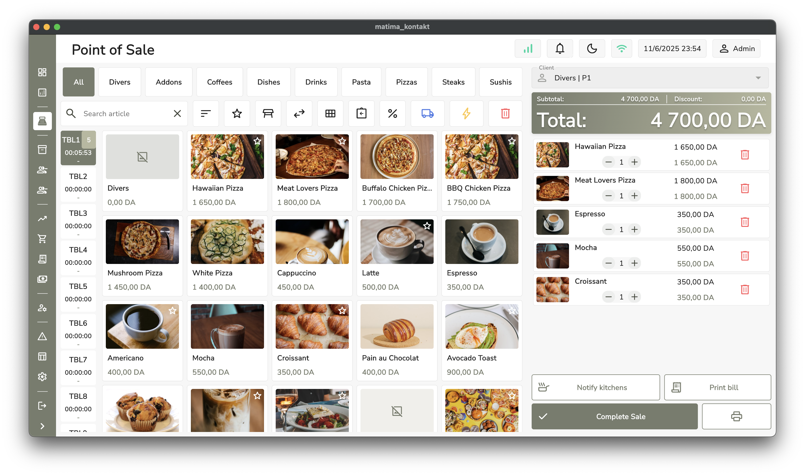

Overview
NexSync POS delivers a unified sales and inventory experience across retail locations. It keeps cashiers productive with responsive Flutter interfaces while synchronizing orders, stock levels, and customer insights in real time. AI-driven forecasting highlights reorder points before shelves run low, and the solution scales from single stores to franchise operations.
Key Features
- Live dashboards for multi-location sales, revenue, and staff performance.
- Offline-first checkout that syncs instantly when connectivity returns.
- Automated inventory alerts with TensorFlow-powered demand forecasting.
- Role-based access for managers, accountants, and warehouse teams.
- Receipt printing, barcode scanning, and customer loyalty integration.
Tech Stack
- Flutter, Dart, Provider, and custom design system components.
- Socket.io for real-time synchronization between devices.
- SQLite offline cache with MySQL and Firebase Cloud Firestore backends.
- TensorFlow models estimating stock turnover and suggested purchase orders.
Gallery


Outcomes
- Reduced stockouts by giving managers seven-day AI reorder projections.
- Improved cashier onboarding with a guided setup that mirrors hardware layouts.
- Enabled franchise owners to review performance from any device in under a minute.
Links
- Request a demo
- GitHub: Private repository (available upon request)